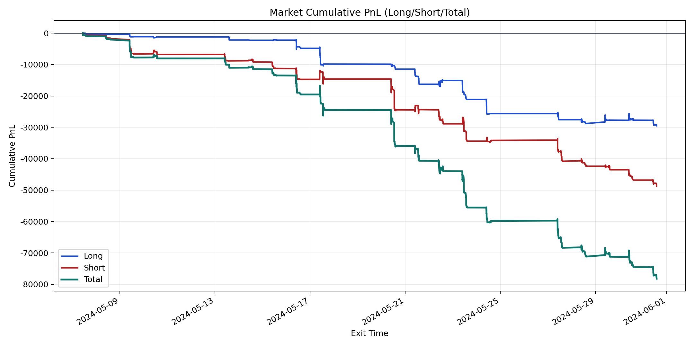
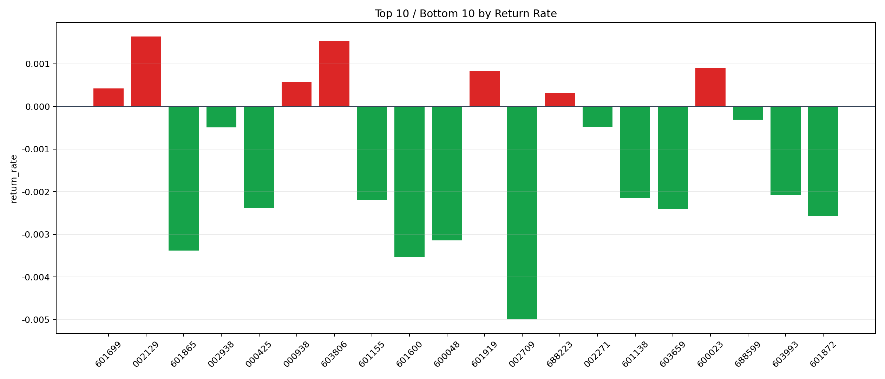

| repo_root | /home/haoranyou/data/output/dynamic_AUM_TAKER |
|---|---|
| period_months | 1 |
| period_label | 2024-05-07_to_2024-05-31 |
| start_time | 2024-05-07 10:43:52 |
| end_time | 2024-05-31 13:53:02 |
| n_trades | 2673 |
| n_symbols | 34 |
| total_pnl | -78225.69994999995 |
| long_total_pnl | -29510.027699999824 |
| short_total_pnl | -48715.67225000014 |
| total_entry_notional | 48981224.0 |
| long_entry_notional | 21060329.0 |
| short_entry_notional | 27920895.0 |
| total_return_rate | -0.0015970548214556653 |
| long_return_rate | -0.0014012139933806268 |
| short_return_rate | -0.0017447747377009276 |
| top_symbols_by_return | ["002129", "603806", "600023", "601919", "000938", "601699", "688223", "688599", "002271", "002938"] |
| bottom_symbols_by_return | ["002709", "601600", "601865", "600048", "601872", "603659", "000425", "601155", "601138", "603993"] |

